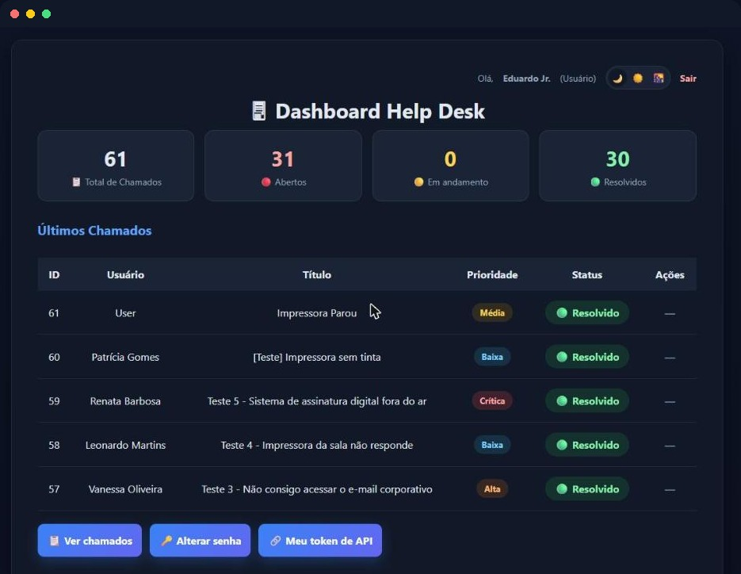
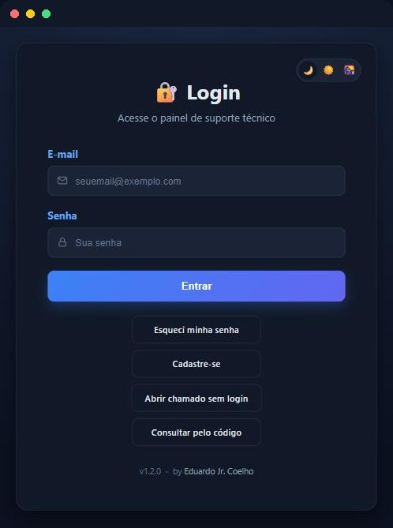
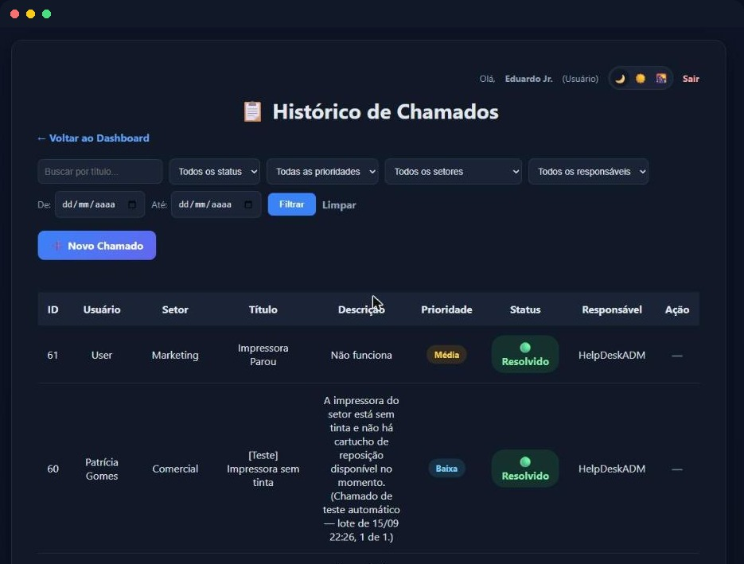
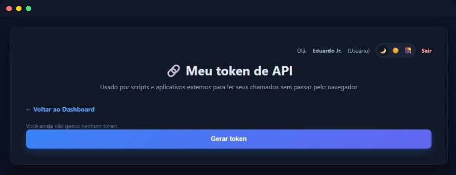

Sistema web para gerenciamento de chamados técnicos, com controle de acesso por perfil, dashboard, API REST, anexos e testes automatizados.
Hospedada em plano gratuito: o primeiro carregamento pode levar cerca de um minuto enquanto o serviço acorda.
Telas reais da aplicação em produção, com dados de demonstração.




Controle de permissões para Usuário, Técnico e Administrador, relido do banco a cada requisição.
Indicadores de chamados abertos, em andamento e resolvidos, com busca, filtros e paginação.
Técnicos e administradores assumem chamados, atualizam status e registram comentários internos.
Aviso automático para técnicos e administradores a cada novo chamado aberto.
Listagem e detalhe de chamados via token pessoal, com os mesmos filtros e regras da interface.
Upload de imagens via Cloudinary e exportação da listagem em Excel ou PDF.
Registro de ações importantes com data, hora e autor, consultável pelo painel administrativo.
Suíte com 155 testes em pytest, rodando no GitHub Actions a cada push e pull request.